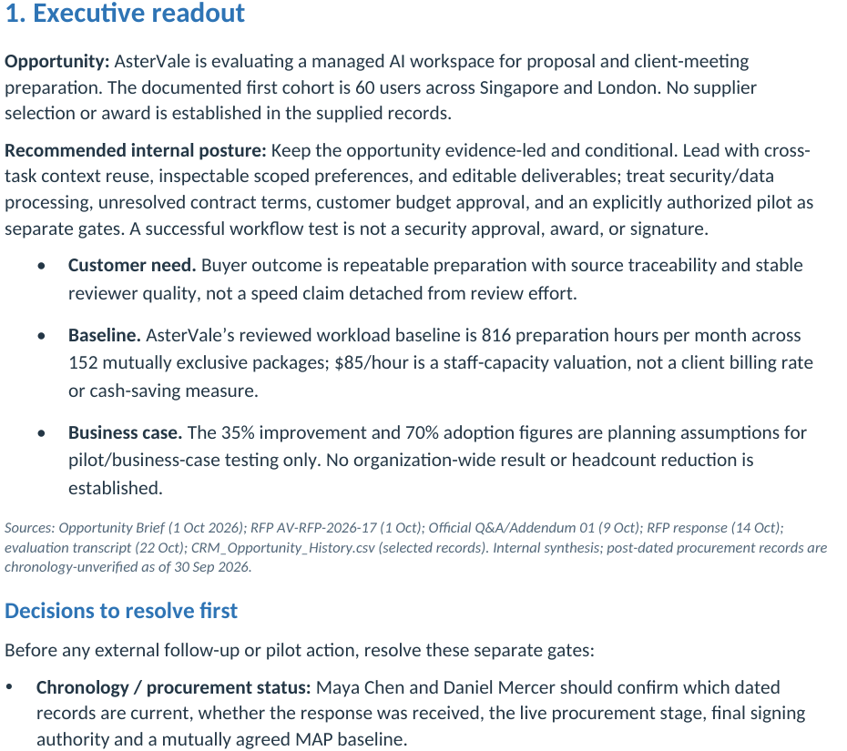

Using AsterVale’s opportunity records and our RFP response, prepare an internal stakeholder brief in Word and a mutual action plan in Excel. Clarify decision roles, priorities and next steps, separating confirmed responsibilities and dates from proposed arrangements.
Noumi
Found 6 files mapping stakeholder roles and action dependencies to the opportunity and bid.
- Decision roles and goals:
 AsterVale_Opportunity_Brief.md
AsterVale_Opportunity_Brief.md - Procurement gates:
 AsterVale_RFP.docx
AsterVale_RFP.docx - Formal clarifications:
 AsterVale_Official_QA.pdf
AsterVale_Official_QA.pdf - Bid recommendation: AsterVale_Go_No_Go_Recommendation.docx
- Proposed scope and limits: AsterVale_RFP_Response_v1.1_Controlled_Draft.docx
- Owners and dependencies:
 Mutual_Action_Plan_Template.xlsx
Mutual_Action_Plan_Template.xlsx
Noumi used your saved preference

The brief opens with a recommendation, evidence and decisions before the detailed buying priorities and roles.
Used your internal-brief preference: recommendation, evidence and decisions needed first.
DONECompleted
6 source files selected · 2 deliverables shown. Previews below are rendered from the supplied files.
Prepared the Word stakeholder brief and Excel mutual action plan for internal alignment.
Your brief order is reused: recommendation, evidence and decisions appear before detailed roles and priorities.
Review: recorded responsibilities stay distinct from proposed dates; chronology and approval gates remain open.
Next: confirm the current procurement stage, owners and agreed dates before baselining the joint plan.